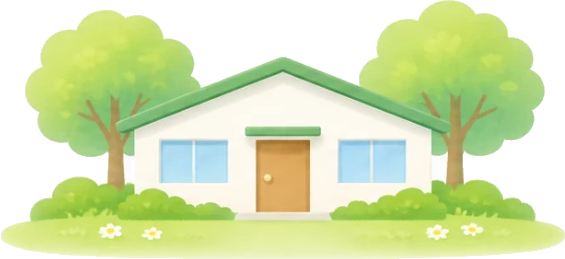

放課後等デイサービス
放課後等デイサービス 結い
小学生〜高校生（6歳〜18歳）
- 所在地
- 山梨県甲府市住吉5丁目3-27
- 電話
- 070-9047-7573
- FAX
- 055-213-5878（2事業所共通）
- 開所時間
- 平日 11:00〜17:30
学校休業日 10:00〜17:00
（夏休み・創立記念日など） - 送迎時間
- 平日 17:30〜18:00
学校休業日 9:30〜10:00／17:00〜17:30 - お休み
- 土・日・祝日、お盆、年末年始
受け入れ状況（曜日ごとの目安）
| 月 | 火 | 水 | 木 | 金 |
|---|---|---|---|---|
| × | × | × | × | × |
○ 6〜10人 △ 1〜5人 × 空きなし（キャンセル待ちのご相談は受け付けています）
1日の流れ（平日の例）
- 放課後各学校へお迎え
- 15:00おやつ
- 自由あそび・集団活動
- 16:30学習（宿題など）
- 17:00片付け・帰りの支度
- 17:30〜送迎・帰宅